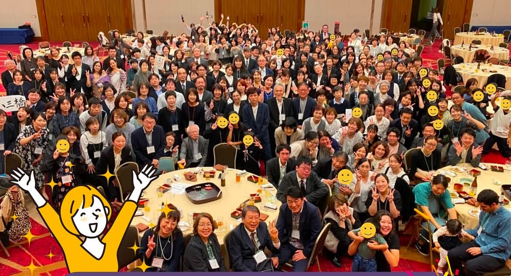

訪問診療（在宅医療）
通院が困難な患者さまのご自宅へ、医師が定期的にうかがって診察いたします。生活や療養を24時間サポートし、緊急時にはさいたま市民医療センターへの入院体制も整えています。

86年の歴史の中で培ってきた経験と地域との絆を大切に、保健・医療・福祉を包括した「何でも相談できる診療所」を目指しています。
うつ・不安・不眠など、こころの不調から、ストレスが体に影響する症状まで幅広く対応します。
お子さまの心のカウンセリングや、認知症についてのご相談まで、まずはお気軽にお話をお聞かせください。
通院が困難な患者さまのご自宅へ、医師が定期的にうかがって診察いたします。生活や療養を24時間サポートし、緊急時にはさいたま市民医療センターへの入院体制も整えています。
身体の不調・慢性疾患の管理・看取りまで、ご自宅で安心して過ごせるよう支援します。
こころの不調や認知症など、ご自宅でのご相談・継続的なサポートに対応します。
English speakers are welcomed. Please contact us by phone. ／ お電話にてお問い合わせください。
受付・お電話の混雑を避けて、24時間いつでもご予約いただけます。
初めての方もご家族の予約もWebからどうぞ。
ご予約の前に、まずは初診シートのご記入をお願いしております。
下のボタンからフォームにアクセスしてご送信ください。

湯澤医院は、昭和5年の開院以来、地域の皆さまに長く親しんでいただけるかかりつけ診療所を目指しております。精神科・心療内科・内科・小児科・皮膚科の診療を通じて、赤ちゃんからご高齢の方まで、こころと体の両面を支えるチーム医療を実践しています。何でも相談できる場所でありたいと考えています。どうぞお気軽にご相談ください。
医師紹介を詳しく見る| 月 | 火 | 水 | 木 | 金 | 土 | 日・祝 | |
|---|---|---|---|---|---|---|---|
| 午前 受付 8:30 - 12:00 診療 9:00 - 12:00 |
○ | ○ | ○ | ○ | ○ | ○ | — |
| 午後 受付 14:45 - 18:00 診療 15:00 - 18:00 |
○ | ○ | ○ | ○ | ○ | — | — |
※ 小児科は金曜休診 ※ 休診日：日曜・祝日・土曜午後